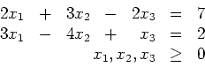
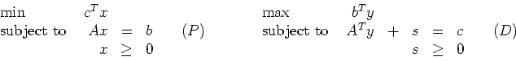
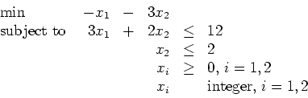
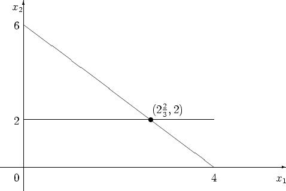
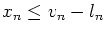
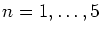
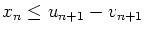
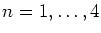
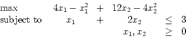

Third Exam, Thursday, December 7, 2000.
You may use any result from your notes or a homework that is clearly stated.
You may use one sheet of handwritten notes, but no other sources.
The exam consists of six questions, and lasts one hundred
minutes.
Please give me a four digit code so that I can display
grades.
You can collect the graded exam from me next week. Grades should be
available early next week.
- 1.
- (15 points)
Determine whether each of the following is an interior point solution
to the following standard form LP constraints:

- (a)
- x=(2,1,0).
- (b)
- x=(7,9,17).
(Note: 17 x 2=34, 17 x 3=51, 17 x 4=68.)
- (c)
- x=(1,3,2).
- 2.
- (15 points)
A student has to complete n takehome exams.
The student has decided that exam j will require rj hours of work.
The jth exam must be turned by dj hours.
If exam j is turned in vj hours ahead of the deadline dj,
a bonus of wj vj points is earned.
Once the student starts working on exam j,
that is the only exam that is worked on until it is finished, rj hours
later.
Formulate the student's problem of finding a feasible schedule that
maximizes the total number of bonus points earned
as a mixed integer programming problem.
(Note: rj, dj, and wj are all parameters of the problem,
vj is a variable.
The student must decide the order in which to work on the exams.
You may find it useful to define binary variables xij, where xij=1 if
exam i is started before exam j, and xij=0 otherwise.
You may also find it useful to define continuous variables tj, denoting the
time at which exam j is started.)
- 3.
- (20 points)
Consider the dual pair of linear programming problems

where A is an m x n matrix,
x, s, and c are n-vectors, and b and y are m-vectors.
Note that the dual slacks s have been included explicitly.
- (a)
- (10 points)
Let x be a strictly positive feasible point.
The primal affine scaling method calculates a dual estimate v.
How is this related to the variables y and s in problem (D)?
Do you expect it to give a feasible point in (D)? Why or why not?
- (b)
- (10 points)
Let x=(1,2,3) be a primal feasible point
and let y be a dual feasible point
with corresponding dual slacks s=(5,1,2). What is the value of the duality
gap cTx-bTy?
- 4.
- (20 points)
Solve the following integer programming problem using branch and bound:

You can use the graphical method to solve the relaxations.
You should only need to branch once.
The problem is pictured.

- 5.
- (15 points)
Consider a system of five reservoirs. Water from reservoir 1 flows into
reservoir 2, that from 2 flows into 3, etc. The amount of water
in reservoir n must be kept between ln and un acre-feet.
Water is released to produce power.
If xn acre-feet of water are released from reservoir n then
pn(xn) gigawatts of power are produced.
It is required to produce P gigawatts with the smallest possible
total flow. Let vn be the initial amount of water in reservoir n.
In order to satisfy the bounds, we need
,

and
,
.
Formulate this problem as a dynamic programming problem.
Make sure that you define the stages and states.
Carefully define fn(s,xn) in words.
State the recursion equations clearly. Be sure to note the effect of
the level constraints on the recursion equations.
Give f5(s) in terms of the functions pn.
(Aside: The level constraints are conservative.
They are formulated in this way to ensure that there is no
overflow or underflow, regardless of the order in which the
releases are made.)
- 6.
- (15 points)
Solve the following nonlinear programming problem using dynamic
programming.
(Note: the variables are not constrained to be integer.)

John E Mitchell
2002-11-30